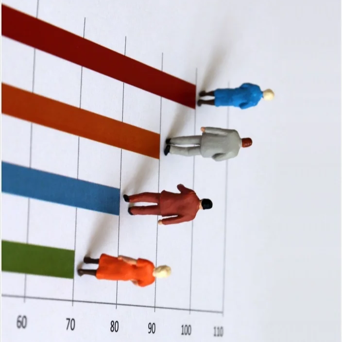
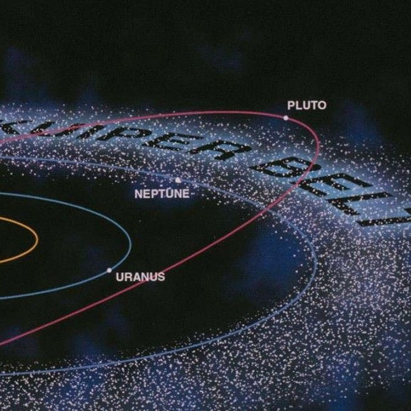

Connected 3 different data sources, cleaned over 400,000 rows of data using Tableau, SQL and Python. Designed and refined visualizations. Developed 4 prediction models on student learning outcomes using CourseKata, presented data storytelling finds on student learning activity and engagement level.
Nice to meet you.
Projects
Below are a list of my professional projects,
You can click on the title to learn more.
 Scroll down for more
Scroll down for more

A project that intends to investigate how various variables in different nations affect one’s life expectancy. Using various modeling and prediction techniques in R and SQL, this project answers a simple question -- what makes you live longer?

An article that transcribes a complex statistical research into simple everyday language. Can the Kuiper Belt’s mystery be uncovered with machine learning? We explore how researchers use advanced statistical techniques to calculate the dimension of our vast cosmic ring.
Applying to college is a challenging task that millions of high school and college students take part in every year. Deciding on which college to choose is even more difficult, as there are many factors that play into your decision, such as the size of the school, the location, and the rigor. One of the most important factors is the cost of school, and whether or not they provide scholarships. Many colleges offer both merit and need based scholarships, but this generosity varies between schools. In this project, we will be assessing how large the difference is between what lower income students and higher income students have to pay among different schools, and if that difference is more pronounced in public institutions or private institutions.